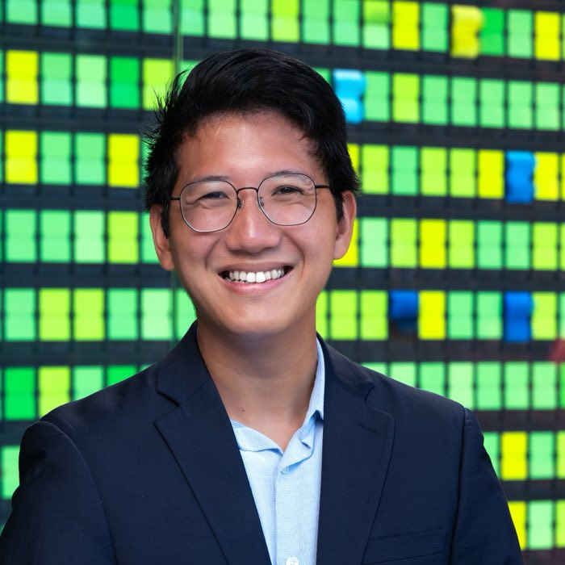

I'm Nat, a former Singapore Air Force officer who builds hardware and software products.
I'm an MBA student at Stanford, looking for a summer 2027 product internship in aerospace, drones and AI.
I started in air defense operations, then moved to the product side: writing the requirements, owning the budget, and shipping the systems the crews use.

Things I've built
Side projects, each built start to finish.
sgraphs
A charting tool for Singapore's open government data. It pulls live numbers from every agency that publishes them, so anyone can explore them.
sgBridgeBot
A Telegram bot that runs a full game of floating bridge in a group chat. It deals, runs the bidding and keeps the turns in order, so nobody needs an app.
FaceAssure
A security camera I built with a classmate. It follows a person across a room and flags anyone it doesn't recognize.
Marble Trouble
A browser idle game set in a Tang dynasty world, built on my own rendering engine.
How I got here
Most recent first.
- 2026 to 2028Stanford Graduate School of Business. MBA student.
- Aug 2026Qeris, an AI drone startup. I worked on go-to-market as an intern. I talked with defense customers in Singapore and tested where the company's navigation technology fit.
- 2023 to 2026Singapore Air Force, flight commander. I led a team of 30+ running air defense around the clock, and drove a two-year upgrade of our air defense system from operator needs to a live trial.
- 2021 to 2023Ministry of Defence, capability development officer. I was a founding member of the digital defense service, and product owner for a system we took from mid-build to an on-time, on-budget launch.
- 2019 to 2021Singapore Air Force, fire unit commander. I led a 12-person crew, and shipped an equipment-tracking web tool in one week.
- 2015 to 2019Northwestern University. BS and MS in computer engineering, with a semester at ETH Zurich.
Say hello
I'd love to talk about product internships in aerospace, drones and AI, or anything on this page.